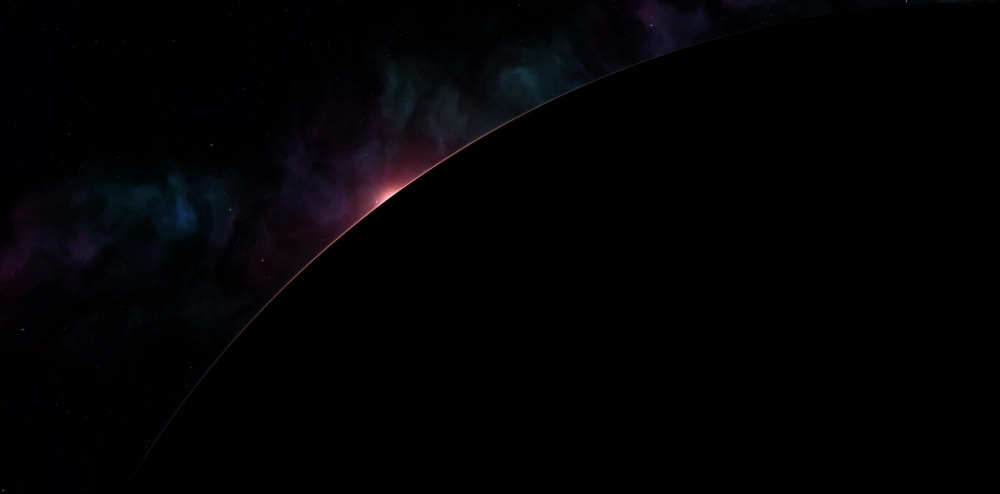
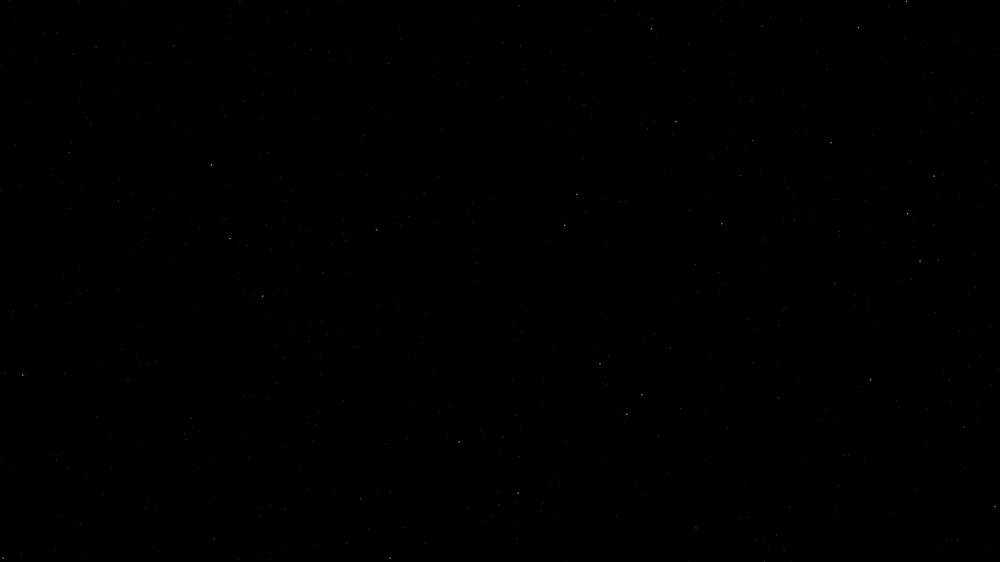

Somos Fragmentless.
Nuestro nombre significa «sin fragmentos»: algo completo, sin pedazos sueltos, todo integrado y funcionando bien. Por eso nuestro eslogan es «Un mundo sin piezas sueltas», y hacia allá vamos.
Conoce el sistemaLa historia detrás de nuestro logo.
Cuando una estrella muere, se deshace en pedazos. Cuando nace, pasa lo contrario: el polvo y el gas que andaban sueltos se juntan hasta volverse una sola cosa. Por eso nuestro logo es una estrella naciendo, y por eso nos llamamos Fragmentless: sin fragmentos.

Y existe: HH 30 es una estrella naciendo a unos 450 años luz de aquí, y se ve casi igual: el corte oscuro en medio y el chorro puntiagudo.
Empezamos por los restaurantes. No terminamos ahí.
Fragmentless la fundó Matthew Santibañez Reyes a los 19 años con una idea: que ningún negocio tenga que trabajar con piezas sueltas.
-
Hoy
Un sistema completo para restaurantes: administración, punto de venta, agente de IA y creación de contenido, en un mismo lugar.
-
Lo que sigue
Llevar la misma forma de trabajar a más industrias. Cada sistema que construimos es la base del siguiente.
-
La meta
Un ecosistema de software donde cada negocio encuentre lo que necesita, conectado y bien hecho.
No hacemos herramientas sueltas. Hacemos sistemas completos.
Hecho bien, desde los cimientos.
-
Bases sólidas
Cada sistema se diseña completo antes de construirse, para que crezca sin romperse.
-
Solo lo que funciona
Lo que ofrecemos está terminado y probado. Nada de promesas a medias.
-
Mejoras sin sorpresas
Cada actualización se prueba antes de llegar a tu negocio.
-
Tus datos, solo tuyos
Cada negocio está separado y protegido desde la base. Nadie más ve tu información.
-
Números en los que confías
Las cifras salen de un solo lugar en todo el sistema, y la IA nunca inventa una.
-
Listo para crecer
Una sola plataforma en la nube que funciona en cualquier dispositivo, sin instalar nada.
Un sistema para restaurantes.
De tu menú a tus ventas, de tus mesas a tus redes. Administra tu restaurante, consulta a tu agente de IA y crea contenido para tu negocio desde un mismo panel, en la web y sin instalar nada.
Es el primer paso de Fragmentless, no el destino final.